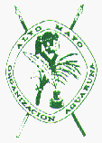

|

|
IPAAMAMU
Memorias y Plan de Acción del IV Congreso de la
Organización Aguaruna Alto Mayo (OAAM)
Autor: Los Líderes Aguarunas
Coautor: Rolando Salgado Castilla
|
|
Moyobamba, 15 y 16 de Abril de 1996
[Página principal de Moyobamba]
- Introducción
- Nuestra Visión de la Realidad
- Necesidades y Dificultades de la Comunidades del
Alto Mayo
- Discursos
- Plan de Acción de la OAAM para el Desarrollo
Integral de las Comunidades Nativas Aguarunas del Alto Mayo
- Declaración del IV Congreso IPAAMAMU
de la OAAM
Introducción
Los aguarunas del Alto Mayo, asentados en las provincias de Rioja y Moyobamba,
somos un grupo perteneciente a la familia etnolinguística Jíbaro,
al igual que nuestros hermanos peruanos Achuar y Huambiza, y Shuar del Ecuador.
Nuestra organización tradicional, sustentada en la familia y los clanes
y por comunidades, ha estado siempre presente para defender nuestros derechos
y promover nuestro desarrollo; ahora el la OAAM, Organización Aguaruna
Alto Mayo, fundada en el año 1982, quien recoge esta tradición
ancestral para continuar avanzando juntos hacia nuestro desarrollo integral.
En abril del año 1996, en la ciudad de Moyobamba, en la Región de
San Martín, Perú, nos reunimos conjuntamente con la mayoría
de los jefes y delegados de las comunidades nativas aguarunas, así mismo
con instituciones estatales y privadas, y ONGs. con motivo de realizar
el IV Congreso IPAAMAMU de la Organización Aguaruna Alto Mayo:
Fortalecimiento y Consolidación para el Desarrollo Integral de las
Comunidades Nativas del Alto Mayo.
Con la presente publicación queremos dejar constancia de nuestra propia
visión del desarrollo para las comunidades nativas aguarunas y relatar
resumidamente las conclusiones a las que llegamos en el IV Congreso IPAAMAMU.
Antes, deseamos expresar nuestro agradecimiento a todos nuestros hermanos
aguarunas que se esforzaron por participar en esta reunión y
también a aquellos que día a día resisten la grave
situación que afrontamos, nos referimos en especial a las mujeres
nativas -nuwa aidau- y a nuestros hijos -uchi aidau- que
serán el futuro de la nación awajún. Por último,
también queremos agradecer a las instituciones estatales y privadas
que brindaron su apoyo para realizar el nuestro IV Congreso IPAAMAMU.
Nuestra Visión de la Realidad
La etnia aguaruna existe desde tiempos aún no determinados, sin embargo,
reconecemos nuestra existencia desde épocas preincas. Actualmente estamos
asentados en la selva alta amazónica , entre los departamentos de
San Martín, Amazonas, Cajamarca y Loreto, en las zonas del Alto Mayo,
Alto Marañón, Jaén y Alto Amazonas, respectivamente.
Nuestra cultura ha resistido a los inca y españoles, y hasta la fecha
conservamos muchos conocimientos y costumbres propias. Está presente
por ejemplo nuestra religión, que expresa en las diversas manifestaciones
de Dios, como Etsa, que fue un señor extraordinario que hizo
milagros y profesías, además enseñó preceptos
morales y de conducta,
a la vez que trajo y enseñó canciones sentimentales y de fiestas;
o Bikut, que fue un hombre extraordinario que hizo profesías
y enseñó leyes que hasta hoy rigen a nuestra comunidad;
y Nugkui, que fue una mujer que hizo milagros y enseñó a
hacer cerámica, criar animales, cuidar a los esposos e hijos,
hacer masato y cultivar yuca, plátano, sachapapa, maní, camote,
zapallo, papaya, caña de azúcar, bitucas y otras.
El manejo de los bosques y la conservación de nuestro medio ambiente no
han sido problema para nosotros, hemos sabido aprovechar a la naturaleza sin
prejudicarla. Pero, ahora, con la presencia de los colones hay serios problemas
que hacen peligrar nuestro futuro aguaruna. Tenemos miedo de pensar en el
futuro, de cómo va a ser nuestra vida si se acaban nuestros bosques y si
sólo quedan aguas contaminadas que no podemos beber. Esta
situación va a ocurrir mientras no haya buena educación de todos,
tanto de aguarunas como de mestizos.
Las personas que vienen de otros lugares tienen otras
costumbres, algunas de las cuales son perjudiciales y destruyen la
naturaleza, produciendo contaminación.
Reconocemos que el mundo ha logrado cierto desarrollo material, pero no
vemos desarrollo moral. En dónde están los sentimientos, el amor,
el cuidado a la naturaleza y la unión entre personas. Los aguarunas no
hemos llegado a este grado de desarrollo material, pero tampoco a problemas
de crímenes, guerras o contaminación ambiental. Antes eramos
feroces guerreros, teníamos guerras, pero ahora eso ha cambiado, hemos
aprendido que es mejor la paz y dejar de pelear. Nuestros problemas actuales
vienen de otro mundo, no de la comunidad aguaruna, y nuestro mayor temor es
por nuestros hijos, que ellos vayan a aprender estos males.
Nos han traído religiones que promueven divisionismos, nos han dicho que
el dinero es malo, que es pecado, y muchos aguarunas hemos creído y
quizás por ello algunos no quieren trabajar. Pero el dinero no es pecado,
sino la ambición porque hace dañar al mundo. Antes el dinero no
era importante porque teníamos suficientes recursos, pero ahora sí
lo necesitamos porque la situación ha cambiado, perjudicándonos.
Ahora pensamos que el dinero es importante mientras vivimos en este mundo,
por ellos los nuevos "misioneros" deben enseñar qué debemos hacer
para tener dinero para poder educar a nuestros hijos.
Hemos avanzado en nuestra organización social y en reconocer, no todos
nosotros, la importancia de la participación de la mujer aguaruna.
La Organización Aguaruna Alto Mayo -OAAM- nos agrupa a todos los
aguarunas de esta zona y gracias a ella hemos podido reflexionar sobre nuestros
problemas y posibilidades de solución, a la vez que expresarlas a las
diferentes instituciones que desean apoyarnos. Pero, fundalmentamente la OAAM,
poco a poco, va logrando que se tomen en cuenta nuestras decisiones, por lo
menos en las acciones que nos involucran, porque de esta manera vamos a ser
realmente beneficiados. Entre tanto, cada vez las mujeres aguarunas van
participando en las decisiones para el desarrollo de nuestra familia o
comunidad, así ha sido posible notarlo en el IV Congreso IPAAMAMU.
Necesidades y Dificultades de la Comunidades del Alto Mayo
Economía: pobreza y producción
Que los niños y niñas sólo puedan comer yuca y masato casi
diariamente en vez de comer carne, verduras, peces, frutas o chontas, es una
muestra del grado de pobreza en que se nos encontramos la mayoría de
aguarunas. Ahora es común encontrar viviendas de mala calidad,
o niños desnudos o con trajes parchados, o falta de dinero para comprar
útiles escolares o medicinas.
Los aguarunas somos agricultores para supervivencia pero no para el mercado.
Quizás nos hace falta adaptarnos a la vida comercial occidental.
Nuestros recursos no los podemos vender, para nosotros es un crimen vender
un terreno porque de él vivimos. No tenemos cosas que vender porque
nuestra costumbre no es vender.
La mayor responsabilidad de esta situación es la reducción de
nuestros territorios y recursos naturales, como consecuencia de la
colonialización mestiza.
Ahora necesitamos apoyo para producir cosas que podamos vender, pero no
como lo ha sucedido con la venta de arroz, que nunca nos pagaban o era
demasiado tarde y a bajo precio. Pensamos que hoy sí podemos aprovechar
los sistemas de crédito porque tenemos más experiencia y sabemos
que debemos seleccionar muy bien a los beneficiarios y actividades productivas
que realmente podemos realizar, para garantizar la devolución del
préstamo.
Organización: presupuesto y personal calificado
La organización se inició con buenas intenciones, pero ahora nos
encontramos con problemas económicos para defender nuestros terrotorios
o lograr apoyo para el desarrollo de nuestras comunidades aguarunas.
Nuestros representantes también tienen que mantener a sus familias
y muchas veces se ven forzados a desviar sus recursos económicos para
sostener la organización, para hacer viajes o gestiones. En este punto
la pobreza se convierte en agente de destrucción de la vida de nuestras
organizaciones.
Además nuestras organizaciones no cuentan con personal administrativo
calificado ni con personal técnico capaz de asesorar el desarrollo de
nuestras comunidades. Hasta hace poco siempre hemos aceptado los proyectos
ofrecidos por diversas instituciones, pero ahora sentimos la neciesidad
de intevenir directamente para garantizar nuestro bienestar, de hacer nuestros
propios proyectos, sin embargo, nos faltan recursos humanos, económicos
y materiales.
Educación: analfabetismo y financiamiento escolar
En los años 70 se inician las escuelas primarias en nuestras comunidades
con lo cual nace la oportunidad para que podamos estudiar, inclusive eran
bilingües. Pero hasta hoy sólo se ha logrado obtener un colegio
secundario bilingüe y unas pocas vacantes en las universidades.
A todo ello debemos agregar que la mala situación económica de
nuestros estudiantes o sus familias sigue promoviendo el abandono escolar, y sea
primario, secundario o universitario.
La calidad de la educación impartida en nuestras comunidades
podría ser mejor, el curriculum debiera ser adecuado a nuestra cultura
y región, y los profesores debieran también ser especialistas
en sus temas. Estas dos cosas son importantes para mejorar el aprovechamiento
del la educación por nosotros los aguarunas.
Encontramos limitaciones en la calidad y cantidad del material bilingüe.
Actualmente no existen libros de matemáticas en idioma aguaruna y no hay
suficientes libros bilingües de otros temas.
Los profesores trabajan con un solo libro, mientras que los alumnos no tienen
ninguno. Cada alumno debiera tener una guía de matemática,
lectura y escritura, y cada profesor debiera tener guías de
metodológicas y de aprestamiento,
todo adaptado a la cultura aguaruna. Además a medida que se avanza en
el grado educativo los materiales educativos son más escazos.
En este punto nuestros profesores aguarunas pueden colaborar mucho, pues son
ellos quienes mejor conocen las necesidades educativas de nuestro pueblo.
Salud desnutrición y epidemias
La desnutrición crónica y anemia son los problemas de salud de
mayor difusión en nuestras comunidades, especialmente los niños
y madres gestantes son afectadas por estes males.
Las causas tienen que ver con nuestra pobreza actual que encuentra sus
raíces en la pérdida de nuestros territorios y recursos
naturales - plantas y fauna silvestre - debido a las últimas
reparticiones de tierras promovidas por el Estado.
Los otros problemas crónicos en nuestras comunidades son del tipo
intestinal, como la parasitósis, amebiasis, disenterías y
tifoidea, debido al consumo de aguas contaminadas y disposición al aire
libre de las disposiciones. Ultimamente hay rebrotes epidémicos de
estas enfermedades y también de paludismo, gripe y reumatismo.
Existen también niños sordomudos y paralíticos, son pocos
pero es muy importante su tratamiento.
La presencia de muchos problemas de salud se explica por la ausencia o deterio
actual de servicios básicos de agua potable y desagüe y medicina
preventiva. En todos los casos se requiere de mayores servicios de salud,
con participación de médicos y aprovechamiento de nuestra propia
medicina tradicional.
Territorio: pérdida de territorio y titulación
La pérdida de territorio se debe a la invasión de nuestras
comunidades por los inmigrantes mestizos. Las comunidades actualmente
están rodeadas de terrenos de propiedad de los mestizos imposibilitando
la recuperación o ampliación de los territorios de nuestras
comunidades.
Algunas veces al hacer las chacras, los mestizos poco a poco se han
apropiado ilegalmente de los territorios de nuestras comunidades,
reduciéndolos al extremo que ya no son suficientes para nuestra
subsistencia. Nuestros reclamos a las dependencias estatales competentes
no han sido atendidos o siempre han resultado en favor de los campesinos
mestizos.
Esta situación ha sido facilitada porque los territorios de nuestras
comunidades no estuvieron, ni están, delimitados fisicamente o en otros
casos debidamente titulados.
Capacitación: administración y microempresas
Nuestras relaciones con el mundo occidental están siendo desventajosas
para nosotros, no estamos realizando intercambios justos en cuanto a
conocimiento, producción o recursos naturales.
Damos trabajo a otras personas en lugar
de hacerlo para nosotros mismos o nuestros hermanos. Entonces necesitamos
prepararnos para cambiar esta situación a nuestro favor. Nececitaremos
crear fuentes de trabajo que nos den mayores ingresos económicos.
Nuestra capacitación es una serie de temas que consideramos importantes,
para aquellos hermanos que realmente estén interesados, marcaría
el cambio hacia el progreso de nuestras comunidades. Una vez capacitados
tendremos más éxito en los proyectos en que nos involucremos,
sabremos distribuir mejor nuestro dinero, pagar correctamente a la gente
o identificar las actividades que serán de nuestro provecho;
también, conservar mejor las cosas valiosas de nuestra cultura o
aprovechar aquellas necesarias de la cultura occidental.
Tal es el caso de mejorar nuestras viviendas, necesitamos que sean más
duraderas, sobre todo porque ya se agotan los materiales que tradicionalmente
hemos usado.
Obras Sociales: aislamiento y medios de comunicación
Vivimos aislados y dispersos pero no en vano. Una razón es cuidar
los linderos de nuestros territorios para evitar invasiones
de mestizos y otra razón, cuidar los terrenos que nos corresponden
cultivar sin provocar desordenes internos. No formamos urbanizaciones porque
no es costumbre nuestra y porque necesitamos más espacio para
producir alimentos, es decir, criar animales y cultivar huertos.
Los lugares en que vivimos presentan grandes dificultades para trasladar
nuestros productos a los mercados. A veces no queremos cultivar las chacras por
encontrarse éstas lejos de las carreteras o por no tener botes ni motores
suficientes para navegar por los ríos, haciéndose muy dificultoso
trasladar los productos. Peor aún cuando no existen lugares para
almacenar estos productos esperando continuar el viaje.
En el caso de algunas mujeres, la complicación de llevar a los
niños y niñas a la escuela caminando durante 4 ó 6 horas
diariamente termina promoviendo el abandono escolar, además de restarles
tiempo para participar en otras actividades, tales como ir a las asambleas.
Mujeres Nativas: desvalorización y carga de trabajo
Usualmente los hombres piensan que el rol de la mujer es sólo cuidar al
esposo y a sus hijos, cria a los animales y cuidar al huerto, traer agua y
leña, e inclusive no deben salir de su casa.
Su rol reproductivo y productivo está entonces sobrecargado, más
que en el caso del hombre. Los derechos de la mujer no están
entendiéndose como su libertad para participar en las actividades
sociales de la comunidad y de que se tome en cuenta su opinión.
Las mujeres debieran estar en las asambleas y enterarse de las cosas de la
comunidad para ayudar a resolverlas, y los hombres debiéramos reconocer
que las mujeres reclaman con justa razón.
En nuestro caso particular es costumbre que un hombre pueda tener varias
esposas, pero últimamente no estamos capaces de sostener a todas ellas,
haciéndolas asumir en varios momentos el rol de padre y madre para
nuestros hijos. Pero aún cuando la mujer es esposa de algún
representante de nuestras organizaciones, ella se ve obligada a asumir el
rol del esposo cuando éste se ausenta por gestiones de la
organización.
Aún cuando <>Bikut recomendó que debiéramos casarnos
cuando entendamos que es hogar y podamos atenderlo, saber hacer casas y cazar
animales, actualmente nos estamos casando muy jóvenes,
antes de prepararnos, sin tener siquiera los estudios escolares
completos ni posibilidad de terminarlos.
Administración de Justicia: derechos humanos y desorden social
Muchas veces las autoridades públicas no nos atienden como es debido:
"Alguna vez hemos prestado dinero a una persona mestiza para que lo devuelva
en el plazo de dos meses con interés de 12%, y al no pagarnos la
denunciamos ante la policía y juez, pero hemos visto que no hube
justicia, que sólo atienden a las personas que tienen dinero,
mientras que a los pobres no".
Las estafas de mestizos a aguarunas son muy comunes y son denunciados por
nosotros, pero, a dejarlos libres, el juez o la policía, estos mestizos
vienen a vengarse de nosotros, inclusive agrediéndonos hasta la muerte.
Otras veces, problemas entre nosotros mismos, como pequeñas estafas que
pudieran ser resueltos en la comunidad, son denunciados a las autoridades
públicas, generando mayores problemas y perjudicando a la
economía y moral de las personas involucradas, por cosas que son pocas
importantes. Ya anteriormente han habido aguarunas perjudicados por estas
situaciones.
En los años 80 hemos tenido un Presidente de Administración de
Justicia, lo cual está aún considerado en el Reglamento de la
OAAM, pero no pudo continuar funcionando por falta de presupuesto. En esos
años se logró regular mejor el orden interno de nuestras
comunidades y sólo se pasaban algunos casos a las autoridades
públicas, reconociendo la gravedad de la situación.
Discursos
Discurso de Apertura del Sr. José Catip Alluy,
Presidente de la Organización Aguaruna Alto Mayo - OAAM
Señor Congresista de la República, Sr. Miguel Quicaña,
Señor representante del Gobierno Regional de San Martín,
Señor Presidente de la Confederación de Nacionalidadas
Amazónicas del Perú - CONAP, Licenciado César Sarasara,
Señora representante del CAAAP, Señores representantes de
diferentes instituciones estatales y privadas, estimados Jefes y Delegados de
diferentes Comunidades Nativas y todos participantes en el IV Congreso IPAAMAMU
de la OAAM.
Para mí es un orgullo de tener este tipo de diálogo
directo, con las instituciones estatales y privadas. Este IV Congreso que
nosotros llamamos IPAAMAMU de la Organización Aguaruna Alto Mayo - OAAM,
se realiza con el objetivo fundamental de fortalecer nuestra unidad
organizativa y generar un espácio de diálogo y
coordenación, una coordenación directa entre el pueblo
awajún y las autoridades públicas y privadas de la Región
San Martín, para el fortalecimiento y consolidación para el
desarrollo integral de las comunidades nativas del Alto Mayo. Esperamos que
a partir de este nuestro IV Congreso IPAAMAMU de la Organización
Aguaruna Alto Mayo, el Gobierno Regional y las Comunidades Nativas Aguaruna
podamos establecer mecanismos, un mecanismo apropiado de consulta y
participación indígena para la adopción de decisiones
del pueblo awajún, dentro del marco del Decenio Internacional de los
Pueblos Indígenas del Mundo. Eso es toda.
Muchas gracias.
Discurso de Apertura del Lic. César Sarasara Andrea,
Presidente de la Confederación de Nacionalidades
Amazónicas del Perú - CONAP
Señor Congresista de la República,
Señores representantes del Departamento de San Martín,
Hermanos y hermanas.
Es para mí como aguaruna un honor muy grande que la
nación Jíbara haya encargado que asuma la presidencia de CONAP
que es la Confederación de Nacionalidadas Amazónicas del
Perú con sede en Lima, que agrupa a nivel gremial a toda la
amazonía peruana, en el sentido cultural de lo que es el pueblo
indígena. La nación Jíbara ha ocupado 78 mil
kilómetros cuadrados de territorio llegando desde el río Apaga,
Perú, hasta Sucua, Ecuador.
Éste ha sido nuestro territorio, el cual hemos perdido, sin embargo,
a pesar de los grandes maltratos que consiguió este pueblo.
La Nación Jíbara sigue con los brazos abiertos para decir una vez
más: hermanos peruanos, continuemos en el fortalecimiento del progreso
de nuestro país, con nuestro aporte técnico científico
no escrito pero sí existente, el cual está presente aquí.
Nosotros como CONAP hemos entendido que la educación es la máxima
prioridad, para el cambio no sólo para los aguarunas,
sino de la región y del país.
Por ello, mediante un concurso, el pueblo aguaruna va a ser sometido - y todas
las demás nacionalidadas también -
para una capacidad a nivel universitario,
es decir, todos los indígenas de la amazonía que ya tienen su
universidad hemos conseguido que el Banco Mundial, el Banco Interamericano de
Desarrollo, les dé una capacitación por un lapso de seis meses.
Aquí ya estamos seleccionando, quiénes van a ir.
CONAP ha entendido de que sin educación no se puede cambiar, no se puede
hablar de desarrollo en su momento oportuno. Vamos a intercambiar,
y doy gracias por este gesto tan humanitario, que entre todos vamos a cambiar
este país tan maravilloso que es el Perú, y estoy seguro de que
aquellos que se llaman mestizos, solamente van a entender al indígena
cuando se aguarunicen. Solamente así vamos a entender.
Muchas gracias.
Discurso de Apertura de la Sra. Albertina Nanjhijam Tuwits,
Secretaria de Asuntos Femeninos de la OAAM
Señor Congresista de la República, Señor Presidente de
CONAP y Señor Presidente de la Organización Aguaruna Alto Mayo,
doy saludo y a las instituciones privadas y a las hermanas y a los hermanos.
Doy un saludo muy cordial el voz de asuntos femeninas por parte de las mujeres
aguarunas del Alto Mayo. Para mí es un placer de asistir en este
IV Congreso de IPAAMAMU de awajún como mujer indígena nativa,
yo siento orgullosamente
que en este IV Congreso vamos a lograr hacer un acuerdo conjunto que así
podamos entendernos entre peruanos y las mujeres que son mestizas.
Para nosotras mujeres indígenas no hay diferencias ni distinciones,
sentimos iguales, único no sabemos de los idiomas que son Español,
no podemos quizás queriendo pronunciar, queriendo decir, no podemos
porque no es nuestro idioma, pero sí podemos entendernos que realmente
necesitamos progreso, progresar para el mejor de nuestro país.
Eso es todo que quiero decir por el momento.
Muchísimas gracias.
Discurso sobre la Mujer Aguaruna de la
Sra. Albertina Nanjhijam Tuwits,
Secretaria de Asuntos Femeninos de la OAAM
Voz de Mujer Femenina, hermanos y hermanas, ya es tiempo que las mujeres
debemos levantarnos, de ayudarnos, hombres y mujeres, para que de igual manera
podamos desarrollar en la comunidad y en nuestros países, para que
así podamos entendernos mejor y así podamos luchar juntas y no
sentimos diferentes porque somos de otra raza, porque nosotras las mujeres
indígenas hemos sido marginadas. ¿En qué manera? En manera cuando
aquel tiempo yo, a veces las mujeres, queremos subir a un auto o queremos
participar en una reunión, siempre nos miraban con asco, siempre nos
miraban con marginación, donde que nosotros nos quedamos, aunque
queremos decir, quedamos desmoralizados, teniendo y siendo inteligentes,
siendo capaz de aportar en cuanto al desarrollo humano.
Entonces, yo como representante de las mujeres del pueblo indígena,
como mujer nativa, siento y digo que las instituciones estatales y privadas,
que nos escuchen y nos apoyen lo que vamos a pedir nosotros, lo que nosotros
queremos, no lo que desean ustedes sino queremos nosotros, porque así
nos vamos a entender ambos y que nos expliquen también ustedes,
la real que tienen ustedes.
El conocimiento que nosotros tenemos vamos a trasmitir a ustedes y ustedes
van a trasmitir sus conocimientos que tienen ustedes, porque nosotros
no sabemos lo que ustedes diariamente escuchan en la radio, diariamente
ven en televisiones internacionales, y ustedes también no conocen lo que
nosotros estamos comunicados con la naturaleza, con el río, con el cerro,
con el viento, porque eso es un conocimiento puro que nosotros tenemos.
Y a veces ustedes dirán, porqué los indígenas tanto andan
cargando sus canastas, se van a la pesca, esos haraganes por no trabajar
¡no señores!
primero conozcan la cultura, la costumbre, porque anteriormente nosotras
mujeres teníamos suficiente alimento, porque nuestro territorio era muy
amplio, que ahora Nueva Cajamarca es pueblo de los mestizos, anteriormente
era pueblo indígena. El territorio ha sido de nosotros aguarunas, que
nosotros hemos cuidado esa naturaleza, que ahora está ya no existen
los bosques, pobre bosque, nosotros sentimos, decimos, ahora vemos,
pasamos, ahí las mujeres, los hombres, decimos, en este sitio
había frutas, frutales donde que nosotros recibíamos nuestros
alimentos, donde las mujeres tenían suficiente para recibir ese alimento
para nuestros hijos que venían en el vientre de una madre
indígena, que vemos ahora todo despejado.
Por eso las mujeres, los hombres indígenas han sabido reservar, no es
porque no querían trabajar, no es porque eran ociosos, no!
Sabíamos porque nuestro científico era un político
indígena, no político que ahora usa, realmente un indígena,
un científico que era Bikut, que nos ha enseñado la ley,
la cultura, que cómo debemos vivir, cómo debemos
evitar la guerra, cómo debemos evitar los egoismos, las murmuraciones,
y desarrollar como personas, como humanos que ahora esperan paz, que dicen paz.
Muchas veces yo escucho que la paz va a venir del cielo, no señores!
porqué vamos a esperar una paz del cielo, nosotros vamos a hacer la paz,
en cuando entendiéndonos, comprendiéndonos, ayudándonos
mutualmente, nosotros vamos a hacer un nuevo mundo.
Los niños, las criaturas que vienen, ellos vamos a enseñar,
para que ellos hagan un mundo nuevo, para nuestro país y para el futuro.
Ese es que, anteriormente, cuando yo era niña, yo me acuerdo de lo que
decían mis padres, mi hermano, que por un machete trabajaban un mes,
dos meses, y a veces no les pagaban. Mi madre, para vestirme a mí,
trabajaba tres meses, hasta cuatro meses por un corte de tela.
Y vamos a vivir así ahora? o vamos a cambiar? vamos a ser una
preocupación de una madre? que mucho tenemos, qué vamos a dar a
los niños? que ahora obligaroriamente estamos tumbando bosques, estamos
terminando, los ríos y quebradas están contaminadas, que la
educación ha entrado en la comunidad. Es una preocupación,
que ustedes en qué manera nos van a apoyar? para poder desarrollar
nosotros, porque nosotros somos las madres, las primeras profesoras, que
nosotros somos primeras que enseñamos a nuestros hijos,
la letra, aunque no escrito, pero enseñamos lo que el Bikut
nos enseñó, como debería mantener la cultura
indígena, eso es que nosotros queremos que nos entiendan.
Muchísimas gracias.
Plan de Acción de la OAAM para el Desarrollo Integral de
Comunidades Nativas Aguarunas del Alto Mayo
Luego de haber leído el contenide de Acta del IV Congreso IPAAMAMU de la
OAAM, Fortalecimiento y Consolidación para el Desarrollo Integral
de las Comunidades Nativas, se aprobaron por unamidad las acciones
necesarias para el desarrollo integral de las comunidades nativas del Alto Mayo.
Para mayor constancia y veracidad y el señal de conformidad firmaros
los representantes de OAAM, CONAP y Jefes y Delegados de las Comunidades.
A continuación, de manera resumida, se presentan las propuestas de
acción para los próximos a&mtilde;os.
Economía
- Crear fondos rotatorios para:
- Crianza de porcinos,
- Crianza de cuyes,
- Crianza de patos,
- Crianza de peces,
- Crianza de animales silvestres,
- Cultivos nativos y plantas medicinales
- Artesania y ecoturismo.
- Crear líneas de crédito para:
- Desarrollo productivo agricola: arroz, maíz, café,
- Desarrollo productivo pecuario: vacuno,
- Construcción de viviendas para Bajo Naranjillo y
Sector Río Soritor,
- Pequeñas empresas,
- Tractor agrícola,
- Pequeños molinos de arroz,
- Desgranadores de maíz,
- Despulpadora de café.
Organización
- Crear un equipo técnico multidisciplinario de la OAAM, para
asesoramiento técnico, legal, administrativo y elaboración de
proyectos productivos y sociales.
- Realizar el V Congreso de la OAAM.
- Solicitar apoyo al Gobierno Regional, Ministerio de Agricultura,
PEAM, FUNDAAM, Dirección Regional de Educación y UBASS con su
equipo profesional y técnico multidisciplinario para elaborar proyectos
y asesoramiento técnico; además nos permitan participar en la
materia y que por lo menos se indique
dentro del Convenio, integrar un miembro de la OAAM, sea técnico o
profesional; y además reconozca económicamente la mano de obra no
calificada por cuenta de las instituciones, para mejorar cumplimiento.
Educación
- Realizar Convenios de Cooperación Interinstitucional con las
Universidades, Institutos Pedagógicos, Tecnológicos, Cenecapes,
Institutos Armados, Dirección Regional de Educación y otros.
- Equipar y reparar los Centros Educativos Bilingües.
- Construir infraestructura para el Colegio Nacional Bilingüe
de Secundaria de Bajo Naranjillo.
- Crear bibliotecas especializadas para los Centros Educativos Bilingües.
- Adecuar la estructura curricular para los Centros Educativos Bilingües.
- Conseguir el reconocimiento e implementación del Centro de
Producción de Materiales Educativos Bilingües del Alto Mayo
y lograr la creación de cuatro plazas con personal bilingüe,
con sus respectivas remuneraciones para garantizar su funcionamiento.
- Conseguir becas de estudio para los estudiantes bilingües
sobresalientes.
- Crear Centros Educativos Ocupacionales para las mujeres aguarunas.
- Conseguir personal profesional bilingüe y/o especializado en cada
área para mejorar la administración y enseñanza en los
Centros Educativos Bilingües.
Salud
- Construir y equipar infraestructura de servicios de salud, con instrumentos,
medicamentos básicos y personal remunerado por el Estado en las siguientes
comunidades:
- Sector Río Soritor,
- Huacayacu,
- Alto Mayo,
- Cachiyacu,
- Nueva Jerusalén,
- Kusú,
- Yarao.
- Construir y equipar un minihospital con instrumentos básicos y
personal remunerado por el Estado en la Comunidad Nativa de Bajo Naranjillo -
Awajún, como centro piloto.
- Promover la enseñanza de producción y uso de alimentos
para combatir la desnutrición en las comunidades nativas.
- Mejorar los pozos de agua deteriorados existentes.
- Construir sistemas de agua potable en las siguientes comunidades
prioritariamente:
- Bajo Naranjillo,
- San Rafaél,
- Shimpiyacu,
- Alto Naranjillo,
- Alto Mayo,
- Morroyacu,
- Sector Río Soritor.
- Construir letrinas mejoradas en todas las comunidades nativas del
Alto Mayo y por familia.
Territorio
- Conseguir la titulación de los territorios de las Comunidades Nativas
Cachiyacu y Kusú.
- Conseguir el reconocimiento de ampliación de territorio en custodia
definitiva de las Comunidades Nativas Shampuyacu y Alto Mayo.
- Conseguir el reconocimiento de ampliación territorial
de las Comunidades Nativas Shimpiyacu y Alto Naranjillo.
- Evitar la violación e invasión de los territorios comunales
por parte de los colones inmigrantes.
- Demarcar físicamente los linderos comunales de manera adecuada
para evitar las invasiones.
- Lograr la intervención de las Agencias Agrarias en los problemas
de linderos en los momentos oportunos.
- Promover al Proyecto Especial de Titulación de Tierras al Ministerio
de Agricultura para que agilicen las titulaciones de las Comunidades Nativas
Cachiyacu y Kusú, el reconocimiento de ampliación de las
Comunidades Nativas Alto Mayo, Shampuyacu, Alto Naranjillo y Shimpiyacu.
- Promover que el Gobierno Regional canalice el financiamiento para
la demarcación de linderos de las comunidades nativas del Alto Mayo.
- Lograr la intervención del Ministerio de Agricultura o INRENA
a la regulación de la extracción forestal de los extractores.
- Lograr que el Ministerio de Agricultura otorgue los permisos de
extracción forestal a los propios comuneros con un aprovechamiento
racional.
Capacitación
- Conseguir cursos de capacitación para los comuneros en
áreas de:
- Contabilidad,
- Administración empresarial, comunal, etc.,
- Comercionalicación,
- Secretariado,
- Computación,
- Enfermería,
- Carpintería, cubicación de madera y mecánica,
- Computación empresarial,
- Técnico pedagógico a los docentes bilingües,
- Ecoturismo y artesanía,
- Cultivo de arroz, maíz, café, plátano, soja,
hortaliza, etc.,
- Crianza de animales menores y mayores,
- Formulación y evaluación de proyectos,
- Construcción de viviendas.
- Promover a las instituciones estatales, privdas y ONGs, regionales y
nacionales, a que apoyen con cursos de capacitación para los
comuneros en las áreas mencionadas.
Obras Sociales
- Lograr la construcción de carreteras en las siguientes communidades
nativas:
- Sector Río Soritor, de la marginal hasta la communidad, de doce
kilómetros;
- Huascayacu, del pueble Valle de la Conquista hasta la communidad;
- Shimpiyacu, del caserío Pueblo Libre hasta la communidad.
- Lograr el mejoramiento de las carreteras en las siguientes communidades:
- Bajo Naranjillo, del centro de la communidad hasta la margen derecha
de Caño hondo, por el lado este de la communidad;
- Alto Naranjillo, de la marginal hasta la communidad;
- Alto Mayo, de la marginal, altura de Naranjos, hasta la communidad.
- Lograr la construcción de una balsa cautiva para la comunidad de
El Dorado en el Puerto San Francisco.
- Equipar la oficina de la OAAM, para mejor funcionamiento administrativo de
la Organización Aguaruna.
- Lograr la transferencia legal de la propiedad de la Casa del Nativo para
la OAAM.
- Conseguir botes y motores para transportar productos a los mercados, para
las communidades nativas Shimpiyacu, Morroyacu y San Rafaél.
- Construir Centros de Acopio para las communidades nativas Shimpiyacu,
Morroyacu y San Rafaél en el Puerto de Huascayacu y otro en la communidad
nativa Bajo Naranjillo y Sector Río Soritor.
- Conseguir medios, como radios de comunicación y vehiculos
motorizados, para las communidades nativas.
- Construir y equipar oficinas para la OAAM y otras para cada communidad
nativa.
Mujeres Nativas
- Realizar cursos de capacitación ocupacional para las mujeres
aguarunas;
- Promover y apoyar la terminación de estudios primarios y secundarios
de las mujeres aguarunas y jóvenes;
- Promover la participación, y su valorización por parte de los
hombres, de las mujeres aguarunas en el desarrollo de las comunidades;
- Crear cunas de niños y niñas, tipo WAWA WASI, para compensar
la carga de hijos de las mujeres aguarunas;
- Establecer un programa permanente de capacitación y
orientación de las madres nativas a través de una promotora
social nativa y otra mestiza especializada en aguarunas;
- Concientizar a los hombres sobre los derechos de la mujer nativa;
- Promover la planificación familiar e intensivar la
participación dinámica en las actividades de su comunidad.
Administración de Justicia
- Elegir un Presidente de Administración de Justicia de la OAAM;
- Elaborar un Reglamento de Administración de Justicia Aguaruna;
- Hacer un Convenio de Cooperación con el Ministerio de Justicia
y la Policía Nacional.
Declaración del IV Congreso IPAAMAMU de la OAAM
Las Comunidades Nativas Aguarunas del Alto Mayo reunidas en su IV Congreso -
IPAAMAMU denominado Fortalecimiento y Consolidación para el Desarrollo
Integral de las Comunidades Nativas realizado los días 15 y 16 de
Abril del presente año en la ciudad de Moyobamba, provincio de Moyobamba
de la Región San Martín:
Reafirmando, nuestra identidad histórica-cultural expresada en nuestra
institución del IPAAMAMU cuyos principios de identidad, solidaridad y
defensa siguen vigentes en el interior de nuestro pueblo Awajún.
Considerando, que el Estado peruano reconoce y protege la pluralidad
étnica y cultural de la nación. Asimismo, respeta la identidad
étnica y cultural de las Comunidades Nativas, de conformidad con los
artículos 2 inc 19 y 89 de la Constitución Política del
Perú.
Destacando, que el Estado peruano ha ratificado el Convenio 169 sobre
Pueblos Indígenas y Tribales en Países Independientes en 1993,
el Convenio de Biodiversidad en 1993, la Convención sobre la
Eliminación de todas las formas de Discriminación contra la
Mujer de 1982. Así como, ha aprobado la Declaración de
Río de la Conferencia Mundial sobre Medio Ambiente y Desarrollo y
la Agenda 21 en 1992, el
PLan de Acción de la Conferencia Mundial de Derechos Humanos,
Declaración de Viena en 1993, el Plan de Acción de la
IV Conferencia Mundial de la Mujer, Beijin en 1995,
y es parte de la constitución del Fondo de Desarrollo para los
Pueblos Indígenas de América Latina y el Caribe.
Teniendo presente, que estamos dentro del Decenio Internacional de las
Poblaciones Indígenas del Mundo según Resolución 48/163
aprobado por la Asamblea General de las Naciones Unidas para fortalecer la
cooperación internacional para la solución de los problemas con que
se enfrenta los Pueblos Indígenas en esferas como Derechos Humanos,
Medio Ambiente, el Desarrollo, la Educación y la Salud.
Considerando, que los derechos de la mujer y del niño son parte
integrante, indivisible e inalienable de los Derechos Humanos de conformidad
con la Declaración de Viena de 1993.
Proclamamos la siguiente Declaración:
- Decide que, toda cooperación para la defensa y el desarrollo de las
Comunidades Awajún por parte de las instituciones públicas y
privadas deberá materializarse mediante Convenios con la
Organización Aguaruna Alto Mayo -OAAM.
- Pide al Gobierno Regional y Central que establezca los procedimientos
adecuados de consulta y participación de los Pueblos Indígenas
a través de sus organizaciones representativas, para asegurar sus
derechos e intereses cada vez que se definan políticas de desarrollo
donde se involucre a las Comunidades Aguarunas.
- Hace un llamamiento al Gobierno Regional de San Martín para que asuma
como parte de su política de desarrollo humano sostenible los
conocimientos técnicos y científicos originarios con el aporte de
profesionales y técnicos indígenas. Asimismo, es urgente su
sistematización para fortalecer el desarrollo integral de las
Comunidades Nativas Awajún.
- Exige, que haya una acción más decidida en la
implementatción de la Educación Bilingüe Intercultural
mediante la creación de Programas y Formación de Profesores
Bilingües tanto en la Universidad de San Martín como en los
Institutos Pedagógicos de la Región.
- Pide a la Dirección Regional de Educación de San Martín
el reconocimiento del Centro de Producción de Materiales Educativas
Bilingües del Alto Mayo, la creación de cuatro plazas con su
respectiva remuneración para garantizar su funcionamiento, y el apoyo
de la entrega de materiales.
- Pide también, que el FONDECES instale una oficina descentralizada en
las ciudades de Rioja y Moyobamba para atender en forma directa
la gestión de las solicitudes que presentan las Comunidades Nativas y
Campesinas.
- Demanda al Gobierno Regional y a las Organizaciones No Gubernamentales
desarrollar programas orientados a minimizar las altas tasas de
desnutrición en la niñez y madres gestantes. Asimismo, impulsar
acciones preventivas rescatando el conocimiento y prácticas
indígenas sobre sus plantas medicinales.
- Demanda asimismo, el respeto al derecho territorial de las Comunidades
Nativas cumpliendo con las solicidudes de titulación y ampliación
que actualmente se encuentran en trámite. Asimismo que exista una mayor
coordinación entre las Agencias Agrarias de Rioja y Moyobamba con la
Dirección Regional de San Martín.
- Solicita, a las institucionas públicas y privadas que los programas
de desarrollo dirigidas a las Comunidades Nativas tengan una perspectiva
de Género para que incorporen las necesidades, intereses, derechos y
puntos de vista tanto de los hombres como de las mujeres indígenas.
De otro lado, es necesario que toda acción hacia las Comunidades
fortalezca la perticipación conjunta de hombres y mujeres.
- Finalmente, este IV Congreso IPAAMAMU respalda la iniciativa de los
líderes de las organizaciones aguarunas huambisas OCCAAM, FECONARIN, FAD,
FECONARSA, ODECOFROC para la gran convocatoria del IPAAMAMU
de la Nación Jíbaro para tratar el problema fronterizo
Perú-Ecuador y plantear el respeto del libre tránsito e
intercambio cultural entre las etnias Aguaruna, Huambisa, Candoshi, Achual y
Shuar; de conformidad con el Artículo 32 del Convenio 169.
[Página principal de Moyobamba]